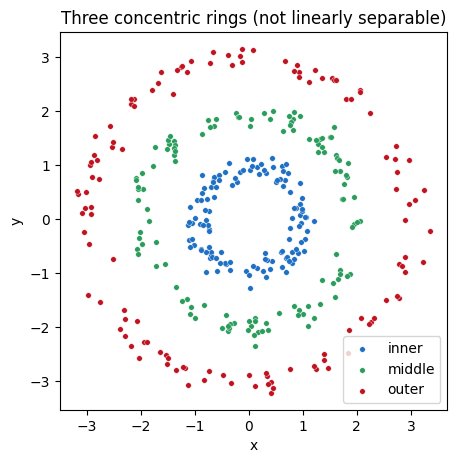
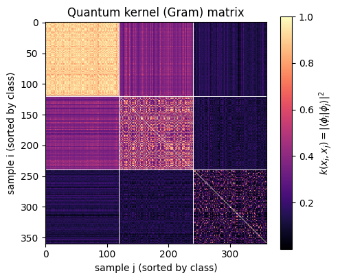
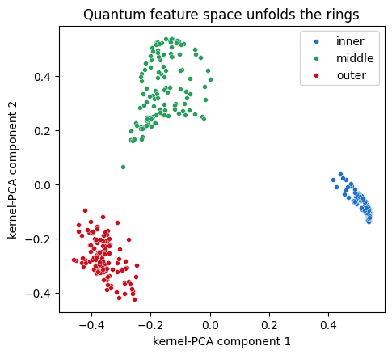

A standalone worked example for the chapter on quantum machine learning.
This notebook builds, from scratch and with nothing but NumPy and scikit-learn, a quantum support vector machine that classifies a three-class dataset of noisy concentric rings. It is self-contained: run the cells top to bottom.
Roadmap
Motivation — why concentric rings defeat a linear classifier, and how the kernel trick rescues it.
The quantum feature map — an IQP-style data-encoding circuit \(U(\mathbf{x})\) that embeds each plane point into the Hilbert space of a small qubit register.
The fidelity kernel — the state overlap \(k(\mathbf{x}_i,\mathbf{x}_j)=|\langle\phi_i|\phi_j\rangle|^2\), assembled into a Gram matrix.
The classical SVM — a convex solver trained on the precomputed quantum kernel, its accuracy, and its decision boundary.
1. Motivation: rings, linear separability, and the kernel trick
We are given points \(\mathbf{x}=(x,y)\) in the plane, each belonging to one of three classes: the inner, middle, or outer ring. The classes are three concentric noisy annuli, so what distinguishes them is the radius\(r=\sqrt{x^2+y^2}\), not any direction in the plane.
A linear classifier looks for a straight hyperplane \(\mathbf{w}\cdot\mathbf{x}+b=0\) separating the classes. No straight line can wrap around a ring, so the rings are not linearly separable in their native coordinates \((x,y)\).
The kernel trick sidesteps this. Map each point through a nonlinear feature map \(\phi:\mathbf{x}\mapsto\phi(\mathbf{x})\) into a higher-dimensional space where the classes do separate linearly. A support vector machine (SVM) never needs the vectors \(\phi(\mathbf{x})\) themselves: its dual problem depends only on inner products, the kernel\(k(\mathbf{x}_i,\mathbf{x}_j)=\langle\phi(\mathbf{x}_i), \phi(\mathbf{x}_j)\rangle\).
A quantum kernel takes this one step further: the feature map is a quantum circuit \(U(\mathbf{x})\) that prepares a state \(|\phi(\mathbf{x})\rangle= U(\mathbf{x})|0\rangle\), and the kernel is the overlap of two such states. The quantum device only ever evaluates the kernel; the actual optimization is handed to a classical, convex SVM solver.
Each class \(c\) is a ring of radius \(R_c\in\{1,2,3\}\): we draw a uniform angle \(\theta\in[0,2\pi)\) and a radius \(R_c+\varepsilon\) with \(\varepsilon\sim \mathcal{N}(0,\sigma^2)\), then place the point at \((r\cos\theta,\,r\sin\theta)\). The seed fixes the draw so the notebook is reproducible.
Code
RADII = (1.0, 2.0, 3.0)NOISE =0.14def make_rings(rng, n_per): XY, y = [], []for c, R inenumerate(RADII): theta = rng.uniform(0.0, 2.0* np.pi, n_per) rad = R + rng.normal(0.0, NOISE, n_per) XY.append(np.column_stack([rad * np.cos(theta), rad * np.sin(theta)])) y.append(np.full(n_per, c))return np.vstack(XY), np.concatenate(y)rng = np.random.default_rng(RNG_SEED)X_train, y_train = make_rings(rng, 120) # 360 training points, sorted by classX_test, y_test = make_rings(rng, 40) # 120 held-out test pointsfig, ax = plt.subplots(figsize=(5, 5))for c inrange(3): m = y_train == c ax.scatter(X_train[m, 0], X_train[m, 1], s=16, color=CLASS_COLORS[c], edgecolors="white", linewidths=0.3, label=CLASS_NAMES[c])ax.set_xlabel("x"); ax.set_ylabel("y"); ax.set_aspect("equal")ax.legend(); ax.set_title("Three concentric rings (not linearly separable)")plt.show()

3. The quantum feature map
We use an IQP-style (Instantaneous Quantum Polynomial) data-encoding unitary on \(N=6\) qubits. First turn each plane point into a six-component feature vector that makes the radius explicit and dominant,
with a scaling \(s\) that sets how strongly the data drives the phases. Two qubits carry the coordinates \((x,y)\) and four carry the radius, at both \(r\) and \(r^2\). The quadratic feature is deliberate: a purely linear radial phase \(s\,r\) aliases the three equally spaced radii \(r=1,2,3\) under the \(2\pi\) periodicity of the rotations, whereas \(r^2\in\{1,4,9\}\) is unequally spaced and separates all three rings. The encoding unitary is \(L\) repetitions of a Hadamard wall followed by a diagonal phase layer,
The single-qubit rotations \(e^{-i f_k Z_k}\) encode the features linearly; the entangling rotations \(e^{-i f_k f_l Z_k Z_l}\) inject products of features, including \(r\cdot x\) and \(r\cdot y\), into the phases. It is these radial ZZ phases that let the embedding tell the rings apart.
Because \(U_Z\) is diagonal in the computational basis, its action is simply an elementwise multiplication by phases \(e^{-i\theta_b}\), where on basis state \(|b\rangle\) with qubit signs \(s^k_b=(-1)^{\mathrm{bit}_k(b)}\),
So the feature state \(|\phi(\mathbf{x})\rangle=U(\mathbf{x})|0\rangle\) is obtained by alternating an elementwise phase multiply with a Hadamard (Walsh) transform. This is exact statevector simulation, and it vectorizes over a whole batch of points at once, so no quantum-computing library is needed.
Code
N_QUBITS =6N_LAYERS =1SCALE =0.2def hadamard_wall(N):"""The full N-qubit Hadamard H^{otimes N} as a dense matrix.""" H1 = np.array([[1, 1], [1, -1]], dtype=complex) / np.sqrt(2) H = np.array([[1.0]], dtype=complex)for _ inrange(N): H = np.kron(H, H1)return Hdef basis_signs(N):"""Row b, column k = (-1)^{bit_k(b)}, the eigenvalue of Z_k on |b>."""return np.array(list(product([1.0, -1.0], repeat=N)))def feature_vectors(XY): x, y = XY[:, 0], XY[:, 1] r = np.sqrt(x**2+ y**2) r2 = r**2return np.column_stack([x, y, r, r, r2, r2]) * SCALEdef feature_states(XY, N=N_QUBITS, L=N_LAYERS):"""Batched |phi(x)> = U(x)|0> for every row of XY -> (P, 2^N).""" H = hadamard_wall(N) signs = basis_signs(N) F = feature_vectors(XY) P, D = F.shape[0], 1<< N single = F @ signs.T pair = np.zeros((P, D))for k inrange(N):for l inrange(k +1, N): pair += (F[:, k] * F[:, l])[:, None] * (signs[:, k] * signs[:, l])[None, :] phase = np.exp(-1j* (single + pair)) psi = np.zeros((P, D), dtype=complex) psi[:, 0] =1.0for _ inrange(L): psi = psi @ H.T # Hadamard wall psi *= phase # diagonal encoding U_Zreturn psipsi_train = feature_states(X_train)print("feature state array:", psi_train.shape, "(360 states in a 2^6 = 64 dim. space)")print("norm check:", np.allclose(np.linalg.norm(psi_train, axis=1), 1.0))
feature state array: (360, 64) (360 states in a 2^6 = 64 dim. space)
norm check: True
4. The fidelity kernel
The quantum kernel is the squared overlap (fidelity) of two feature states,
On hardware one estimates this by running the inversion circuit \(U^\dagger(\mathbf{x}_i)U(\mathbf{x}_j)\) and measuring the probability of returning to \(|0\rangle^{\otimes N}\). In exact simulation we already hold the states, so the whole \(M\times M\) Gram matrix is one matrix product. Sorting the samples by class makes the matrix visibly block-diagonal: within-class overlaps are large, between-class overlaps small.
Code
def fidelity_kernel(A, B):return np.abs(A.conj() @ B.T) **2K_train = fidelity_kernel(psi_train, psi_train) # 360 x 360 Gram matrixfig, ax = plt.subplots(figsize=(5.2, 4.4))im = ax.imshow(K_train, cmap="magma")for k in (120, 240): ax.axhline(k -0.5, color="white", lw=0.7); ax.axvline(k -0.5, color="white", lw=0.7)ax.set_xlabel("sample j (sorted by class)"); ax.set_ylabel("sample i (sorted by class)")fig.colorbar(im, label=r"$k(x_i,x_j)=|\langle\phi_i|\phi_j\rangle|^2$")ax.set_title("Quantum kernel (Gram) matrix")plt.show()

5. Train the classical SVM on the precomputed kernel
With the kernel in hand, classification is a convex optimization: the SVM dual
has a unique global optimum. There are no barren plateaus and no local minima here: the quantum device supplied the kernel, and the rest is a textbook quadratic program. We hand scikit-learn the precomputed Gram matrix and read off accuracy on the held-out test set (whose kernel is evaluated against the training states).
train accuracy = 1.000
test accuracy = 1.000
support vectors per class: [ 5 9 43]
6. The decision boundary
To draw the classifier’s decision regions we evaluate the quantum kernel between a dense grid of plane points and the training states, then ask the trained SVM to label each grid point. A linear model could never produce these closed, concentric boundaries in \((x,y)\): the quantum feature map has bent the straight SVM hyperplane into rings.
Finally, a kernel-PCA projection turns the abstract Gram matrix into a picture of the feature space. Reading its top two components directly from the quantum kernel, the three concentric rings unfold into three compact, linearly separable clusters, the geometric reason the convex SVM succeeds.
Code
proj = KernelPCA(n_components=2, kernel="precomputed").fit_transform(K_train)fig, ax = plt.subplots(figsize=(5.2, 4.6))for c inrange(3): m = y_train == c ax.scatter(proj[m, 0], proj[m, 1], s=18, color=CLASS_COLORS[c], edgecolors="white", linewidths=0.3, label=CLASS_NAMES[c])ax.set_xlabel("kernel-PCA component 1"); ax.set_ylabel("kernel-PCA component 2")ax.legend(); ax.set_title("Quantum feature space unfolds the rings")plt.show()

Summary
Concentric rings are not linearly separable in \((x,y)\); radius is the discriminating coordinate.
An IQP quantum feature map on 6 qubits embeds each point as a state, encoding the radius into single-qubit and ZZ-entangling phases.
The fidelity kernel\(|\langle\phi_i|\phi_j\rangle|^2\) is block-diagonal by class, and a classical, convex SVM trained on it separates the rings with perfect accuracy.
Kernel PCA confirms the embedding turns the rings into linearly separable clusters.
The quantum device does one job: evaluate a kernel that may be hard to compute classically. Every optimization step remains convex, so this route sidesteps the barren-plateau problem of variational quantum circuits. Its own bottleneck lies elsewhere: estimating each kernel entry to fixed precision costs many measurement shots, and for very expressive maps the overlaps concentrate exponentially.